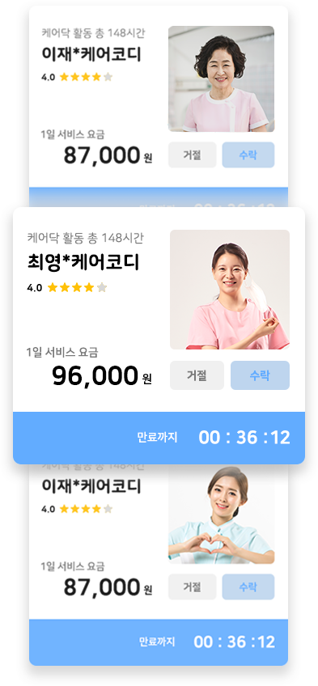

믿고 선택하는 간병인
소중한 가족을 위해 직접 선택하세요.
플랫폼 매칭 시스템
365일 24시간 언제든지 매칭이 가능합니다.

현명하게 안심하고 쓰는 케어닥
매일 받는 돌봄일지
원하는 장소와 시간
현금과 카드결제
케어닥 안심시스템
케어닥에서는 보다 나은 돌봄을 위해
5가지의 안심 돌봄 시스템을 운영합니다.
인적, 이력, 기술 능력을
일대일 인터뷰로
검증해요.
돌봄일지로 어르신의
현황을 매일 보내드려요.
전문 관리 시스템으로
교육을 하고 패널티
시스템으로 관리해요.
도움이 필요한 정도에
따라 고정된 비용만
결제돼요.
혹시 모를 상황에 대비해
KB 손해 보험에
가입돼있어요.
객관적으로 볼 수 있는 리얼후기
소중한 가족을 위해 케어닥과 함께해주세요.